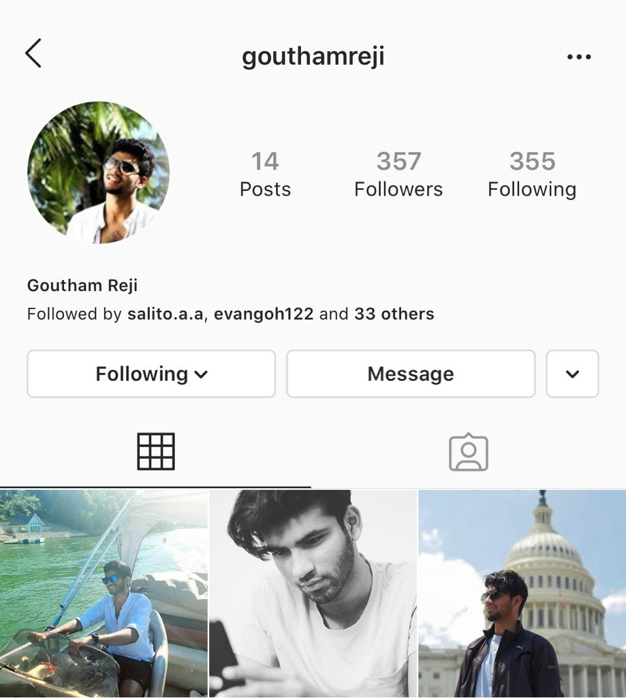

Instagram Profile
Joined Instagram 2015
My most frequented social media platform.
Click on the below link to find me on Instagram.
Instagram LinkMy most frequented social media platform.
Click on the below link to find me on Instagram.
Instagram Link